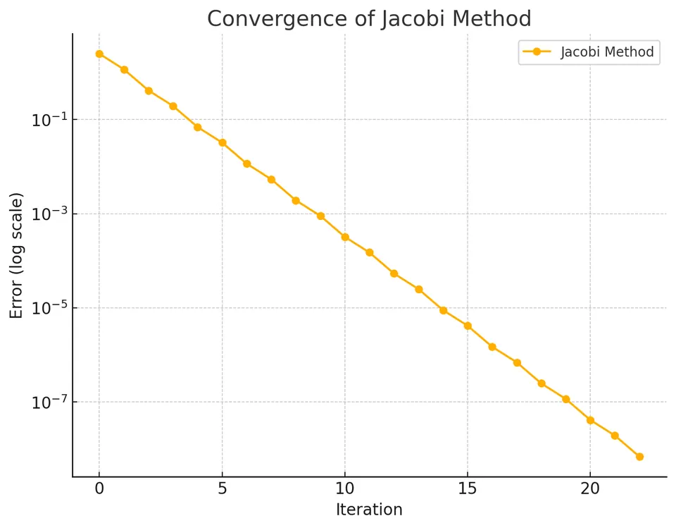

The Jacobi method is a classical iterative algorithm used to approximate the solution of a system of linear equations $A\mathbf{x} = \mathbf{b}$. Instead of attempting to solve the system directly using methods such as Gaussian elimination, the Jacobi method iteratively refines an initial guess for the solution. With each iteration, it uses the previous iteration’s values to compute new approximations, progressively moving closer to the true solution, provided certain conditions on the coefficient matrix $A$ are met.
One of the key characteristics of the Jacobi method is that each component of the solution vector is updated using only values from the previous iteration. This makes the method amenable to parallelization, as each component’s update is independent from the others at a given iteration.

Consider the linear system:
$$A\mathbf{x} = \mathbf{b},$$ where
$$ A = \begin{bmatrix} a_{11} & a_{12} & \cdots & a_{1n}\\ a_{21} & a_{22} & \cdots & a_{2n}\\ \vdots & \vdots & \ddots & \vdots\\ a_{n1} & a_{n2} & \cdots & a_{nn} \end{bmatrix} $$
$$ \mathbf{x} = \begin{bmatrix} x_1 \\ x_2 \\ \vdots \\ x_n \end{bmatrix} $$
$$ \mathbf{b} = \begin{bmatrix} b_1 \\ b_2 \\ \vdots \\ b_n \end{bmatrix} $$
If we split $A$ into its diagonal and off-diagonal parts, we have:
$$A = D + L + U$$
where:
The system $A\mathbf{x} = \mathbf{b}$ can then be written as:
$$D\mathbf{x} = \mathbf{b} - (L + U)\mathbf{x}.$$
Solving for $\mathbf{x}$:
$$\mathbf{x} = D^{-1}(\mathbf{b} - (L + U)\mathbf{x}).$$
The Jacobi iteration proceeds by using the values of $\mathbf{x}$ from the previous iteration on the right-hand side. Let $\mathbf{x}^{(k)}$ denote the approximation of the solution after $k$ iterations. Then the iteration rule is:
$$\mathbf{x}^{(k+1)} = D^{-1}\bigl(\mathbf{b} - (L + U)\mathbf{x}^{(k)}\bigr).$$
This can be written component-wise as:
$$x_i^{(k+1)} = \frac{b_i - \sum_{\substack{j=1 \\ j \ne i}}^{n} a_{ij} x_j^{(k)}}{a_{ii}}, \quad \text{for } i = 1, 2, \ldots, n.$$
The derivation of the Jacobi method starts from the linear system $A\mathbf{x} = \mathbf{b}$. By isolating each equation’s unknown on its diagonal component, you effectively perform a "fixed-point" iteration. Consider the $i$-th equation:
$$a_{ii} x_i + \sum_{\substack{j=1 \\ j \ne i}}^{n} a_{ij} x_j = b_i.$$
Rearranging for $x_i$:
$$x_i = \frac{b_i - \sum_{j \ne i} a_{ij} x_j}{a_{ii}}.$$
In an iterative scheme, at iteration $k+1$, you use the old values $x_j^{(k)}$ on the right-hand side:
$$x_i^{(k+1)} = \frac{b_i - \sum_{j \ne i} a_{ij} x_j^{(k)}}{a_{ii}}.$$
This process defines the Jacobi iteration. The method converges if the spectral radius of the iteration matrix $D^{-1}(L+U)$ is less than one, which is guaranteed if $A$ is strictly diagonally dominant or meets certain sufficient conditions (e.g., symmetric positive definite under some constraints).
I. Initialization:
Choose an initial guess $\mathbf{x}^{(0)} = (x_1^{(0)}, x_2^{(0)}, \ldots, x_n^{(0)})^\top$. A common choice is the zero vector or a small random vector.
II. Iterative Update:
For $k = 0,1,2,\ldots$ (until convergence):
$$ x_i^{(k+1)} = \frac{b_i - \sum_{j=1, j \ne i}^{n} a_{ij} x_j^{(k)}}{a_{ii}}, \quad i = 1, 2, \ldots, n. $$
III. Convergence Check:
After computing $\mathbf{x}^{(k+1)}$, check if $\|\mathbf{x}^{(k+1)} - \mathbf{x}^{(k)}\|$ (or $\|A\mathbf{x}^{(k+1)}-\mathbf{b}\|$) is less than a given tolerance $\varepsilon$. If yes, stop; otherwise, continue iterating.
Given System:
$$ \begin{aligned} 2x - y &= 5, \\ x + 3y &= 7. \end{aligned} $$
In matrix form:
$$A = \begin{bmatrix} 2 & -1 \\ 1 & 3 \end{bmatrix}, \quad \mathbf{x} = \begin{bmatrix} x \\ y \end{bmatrix}, \quad \mathbf{b} = \begin{bmatrix} 5 \\ 7 \end{bmatrix}.$$
From the equations:
$$2x - y = 5 \implies x = \frac{5 + y}{2}, \quad x + 3y = 7 \implies y = \frac{7 - x}{3}.$$
The Jacobi iteration formulas are:
$$x^{(k+1)} = \frac{5 + y^{(k)}}{2}, \quad y^{(k+1)} = \frac{7 - x^{(k)}}{3}.$$
Step-by-step Calculation:
Initial Guess: Let $x^{(0)} = 0$, $y^{(0)} = 0$.
Iteration 1:
$$x^{(1)} = \frac{5 + 0}{2} = 2.5, \quad y^{(1)} = \frac{7 - 0}{3} \approx 2.3333.$$
Iteration 2:
Using $x^{(1)} = 2.5$ and $y^{(1)} = 2.3333$:
$$ x^{(2)} = \frac{5 + (2.3333)}{2} = \frac{7.3333}{2} = 3.66665, \quad y^{(2)} = \frac{7 - 2.5}{3} = \frac{4.5}{3} = 1.5. $$
Iteration 3:
Now $x^{(2)} = 3.66665$, $y^{(2)} = 1.5$:
$$ x^{(3)} = \frac{5 + 1.5}{2} = \frac{6.5}{2} = 3.25, \quad y^{(3)} = \frac{7 - 3.66665}{3} = \frac{3.33335}{3} = 1.1111167. $$
Continue iterating until $|x^{(k+1)} - x^{(k)}|$ and $|y^{(k+1)} - y^{(k)}|$ are below a desired tolerance (e.g., $10^{-4}$). Over many iterations, the values will approach the true solution (which, by direct solving, is $x=3, y= \frac{4}{3} \approx 1.3333$). The Jacobi iterations gradually "home in" on this solution.